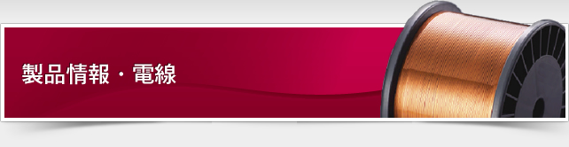
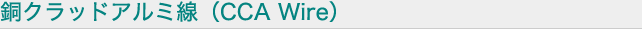
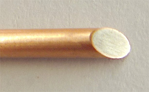

アルミニウム線の軽さと銅線の半田付性を反映させた材料です。
(製造可能範囲: 0.25mm～2.40mm ボビン: 通常 PT-25)
その他のサイズはお問い合わせ願います。
(製造可能範囲: 0.25mm～2.40mm ボビン: 通常 PT-25)
その他のサイズはお問い合わせ願います。

| 種類 | 用途、特徴 | |
|---|---|---|
| UEW F(155℃), EAIW,AIW |
低コスト 軽量 半田付性 |
銅線との比較、コストダウンに最適です 銅線との比較、軽量化に最適です 表面が銅で被覆されているので銅線と同等の半田付性を有します |
| 線種類 | 可撓性 | 重量 | 半田付性 | DC抵抗 | 高周波抵抗 |
|---|---|---|---|---|---|
| アルミ | ◎ | ◎ | △ | △ | △ |
| 銅 | ○ | △ | ◎ | ◎ | ◎ |
| CCA | ◎ | ○ | ◎ | ○ | ◎ |
記載されていない商品でもまずは弊社までお問い合わせ下さい。
各メーカーから御希望の材料をお探しいたします。